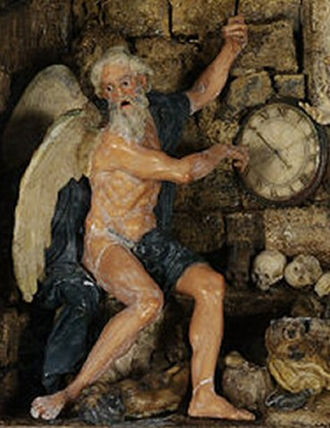

Saturday, January the 8th, 2011
back to: title, date or indexes

I ought to have posted this waxen image last week, to mark the changing of the year, but back then, in the past, I had never seen it. It's a detail from “Time And Death” by Caterina de Julianis (1695–1742), a Neapolitan nun and student of the Sicilian abbot and waxworker Gaetano Giulio Zumbo (1656–1701). More here, though I came across it when reading the section on “Wax” in Marina Warner's Phantasmagoria : Spirit Visions, Metaphors, And Media Into The Twenty-First Century (2006). Later on in the book I am looking forward to “Ether” and “Ectoplasm”—as, in the latter case, will be many visitors to this website. According to the statistics, more people come stumbling through the rusty iron gates of Hooting Yard in search of ectoplasm than of any other topic—not surprisingly, when we consider Marina Warner's observation that “the gossip circuits of unofficial knowledge give the mental skyscape of the twenty-first century the wild heterogeneity of the Hellenistic world, as residues from different eras have adhered to form a sticky, bristling deposit. Judaeo-Cabbalistic angels; Gnostic energumens, phantasms and succubi; Neoplatonist daimons; Middle Eastern ghouls and genies; Romantic vampires and revenants; African, Caribbean, and Native American zombies and spectres—all these various spirits and more besides flock and throng the entertainment ether and the world-wide Web”.